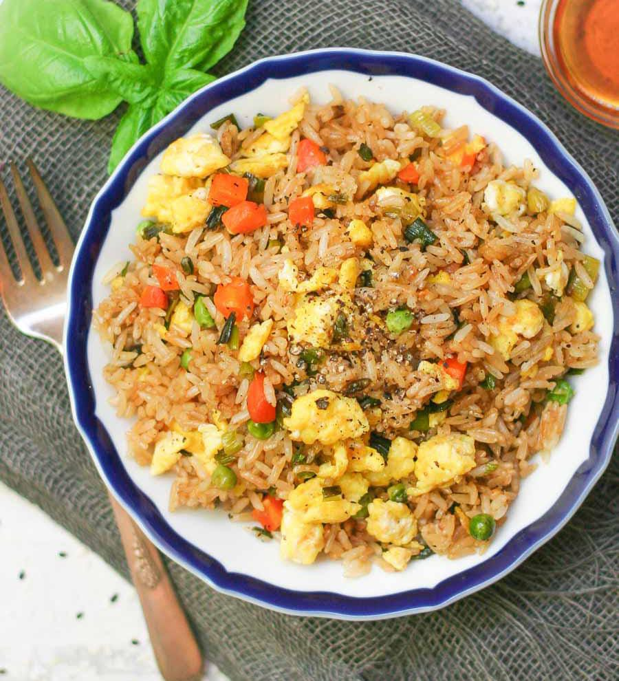

Egg Rice
⭐⭐⭐⭐☆ 4.5 Rating | ⏱ 25 Minutes | 🍽 2 Servings
Category
Rice Dish
Difficulty
Easy
Calories
360 kcal
Cooking Style
Indian
📋 Ingredients
- 2 Cups Cooked Rice
- 3 Eggs
- 1 Onion (Finely Chopped)
- 1 Tomato (Optional)
- 2 Green Chillies
- 1 tsp Ginger Garlic Paste
- ½ tsp Turmeric Powder
- 1 tsp Red Chilli Powder
- ½ tsp Garam Masala
- 2 tbsp Oil
- Salt to Taste
- Coriander Leaves
🍳 Required Utensils
- Frying Pan
- Cooking Spoon
- Knife
- Cutting Board
- Mixing Bowl
- Serving Plate
📖 Introduction
Egg Rice is a quick, tasty and protein-rich dish prepared with cooked rice, eggs and simple Indian spices. It is perfect for breakfast, lunch or dinner and can be prepared within 25 minutes.
🔬 Principle
Eggs are scrambled separately before mixing with rice. This keeps the eggs soft and fluffy while allowing the rice to absorb the spices evenly.
👨🍳 Procedure
- Heat oil in a frying pan.
- Add chopped onions and sauté until golden.
- Add ginger garlic paste and cook for 2 minutes.
- Add green chillies and chopped tomatoes.
- Add turmeric, chilli powder and salt.
- Break the eggs into the pan.
- Scramble the eggs until fully cooked.
- Add cooked rice.
- Mix gently without breaking the rice.
- Add garam masala.
- Cook for another 3–4 minutes.
- Garnish with coriander leaves.
- Serve hot.
⚠ Precautions
- Use freshly cooked or cooled rice.
- Cook eggs completely.
- Do not overmix the rice.
- Cook on medium flame.
💡 Chef Tips
- Add black pepper for extra flavour.
- Use butter instead of oil for rich taste.
- Add spring onions for restaurant-style Egg Rice.
- Serve immediately while hot.
🥗 Nutrition Facts
| Nutrient | Amount |
|---|---|
| Calories | 360 kcal |
| Protein | 16 g |
| Carbohydrates | 40 g |
| Fat | 14 g |
🍽 Serving Suggestions
- Tomato Sauce
- Chicken Curry
- Vegetable Manchurian
- Onion Raita
- Papad
- Fresh Salad
🌿 Health Benefits
- Excellent source of protein.
- Provides energy for daily activities.
- Rich in Vitamin B12.
- Good for muscle growth.
- Easy to digest.
✅ Result
The prepared Egg Rice should have fluffy rice coated with aromatic spices and soft scrambled eggs. The dish should be colourful, flavourful and served hot with your favourite side dish or sauce.
🎥 Watch Recipe Video
Learn the complete recipe by watching the step-by-step video.
▶ Watch on YouTube